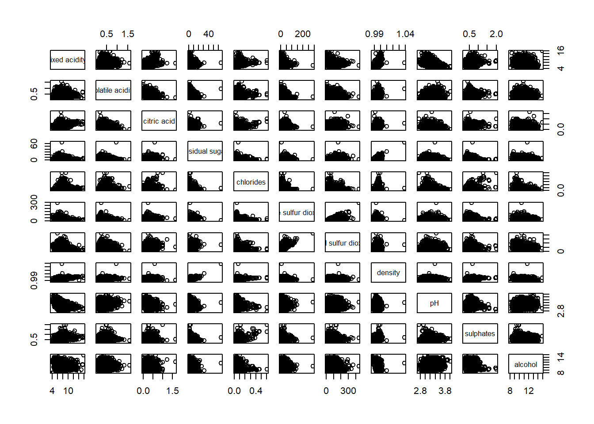

Show me the good stuff
pacman::p_load('plotly', 'tidyverse', 'corrplot', 'ggstatsplot', 'ggcorrplot')All required packages for Hands on Exercise 6 are loaded together here.
pacman::p_load('plotly', 'tidyverse', 'corrplot', 'ggstatsplot', 'ggcorrplot')require(devtools)
install_version("ggtern", version = "3.4.1", repos = "http://cran.us.r-project.org")library(ggtern)pop_data <- read_csv("data/respopagsex2000to2018_tidy.csv")#Deriving young, economy active and old measures
agpop_mutated <- pop_data %>%
mutate('Year' = as.character(Year))%>%
spread(AG, Population) %>%
mutate(YOUNG = rowSums(.[4:8])) %>%
mutate(ACTIVE = rowSums(.[9:16])) %>%
mutate(OLD = rowSums(.[17:21])) %>%
mutate(TOTAL = rowSums(.[22:24])) %>%
filter(Year == 2018) %>%
filter(TOTAL > 0)ggtern(data=agpop_mutated, aes(x=YOUNG, y=ACTIVE, z=OLD)) + geom_point()
ggtern(data=agpop_mutated, aes(x=YOUNG,y=ACTIVE, z=OLD)) +
geom_point() +
labs(title="Population structure, 2015") +
theme_rgbw()
# reusable function for creating annotation object
label <- function(txt) {
list(
text = txt,
x = 0.1, y = 1,
ax = 0, ay = 0,
xref = "paper", yref = "paper",
align = "center",
font = list(family = "serif", size = 15, color = "white"),
bgcolor = "#b3b3b3", bordercolor = "black", borderwidth = 2
)
}
# reusable function for axis formatting
axis <- function(txt) {
list(
title = txt, tickformat = ".0%", tickfont = list(size = 10)
)
}
ternaryAxes <- list(
aaxis = axis("Young"),
baxis = axis("Active"),
caxis = axis("Old")
)
# Initiating a plotly visualization
plot_ly(
agpop_mutated,
a = ~YOUNG,
b = ~ACTIVE,
c = ~OLD,
color = I("black"),
type = "scatterternary"
) %>%
layout(
annotations = label("Ternary Markers"),
ternary = ternaryAxes
)wine <- read_csv("data/wine_quality.csv")pairs(wine[,1:11])
pairs(wine[,2:12], upper.panel = NULL)
pairs(wine[,2:12], lower.panel = NULL)
panel.cor <- function(x, y, digits=2, prefix="", cex.cor, ...) {
usr <- par("usr")
on.exit(par(usr))
par(usr = c(0, 1, 0, 1))
r <- abs(cor(x, y, use="complete.obs"))
txt <- format(c(r, 0.123456789), digits=digits)[1]
txt <- paste(prefix, txt, sep="")
if(missing(cex.cor)) cex.cor <- 0.8/strwidth(txt)
text(0.5, 0.5, txt, cex = cex.cor * (1 + r) / 2)
}
pairs(wine[,2:12],
upper.panel = panel.cor)
One of the major limitation of the correlation matrix is that the scatter plots appear very cluttered when the number of observations is relatively large (i.e. more than 500 observations). To over come this problem, Corrgram data visualisation technique suggested by D. J. Murdoch and E. D. Chow (1996) and Friendly, M (2002) and will be used.
ggstatsplot::ggcorrmat(data = wine, cor.vars = 1:11)
ggstatsplot::ggcorrmat( data = wine, cor.vars = 1:11, ggcorrplot.args = list(outline.color = “black”, hc.order = TRUE, tl.cex = 10), title = “Correlogram for wine dataset”, subtitle = “Four pairs are no significant at p < 0.05” )
Things to learn from the code chunk above:
cor.vars argument is used to compute the correlation matrix needed to build the corrgram. ggcorrplot.args argument provide additional (mostly aesthetic) arguments that will be passed to ggcorrplot::ggcorrplot function. The list should avoid any of the following arguments since they are already internally being used: corr, method, p.mat, sig.level, ggtheme, colors, lab, pch, legend.title, digits.
The sample sub-code chunk can be used to control specific component of the plot such as the font size of the x-axis, y-axis, and the statistical report.
ggplot.component = list( theme(text=element_text(size=5), axis.text.x = element_text(size = 8), axis.text.y = element_text(size = 8)))
grouped_ggcorrmat(
data = wine,
cor.vars = 1:11,
grouping.var = type,
type = "robust",
p.adjust.method = "holm",
plotgrid.args = list(ncol = 2),
ggcorrplot.args = list(outline.color = "black",
hc.order = TRUE,
tl.cex = 10),
annotation.args = list(
tag_levels = "a",
title = "Correlogram for wine dataset",
subtitle = "The measures are: alcohol, sulphates, fixed acidity, citric acid, chlorides, residual sugar, density, free sulfur dioxide and volatile acidity",
caption = "Dataset: UCI Machine Learning Repository"
)
)
Things to learn from the code chunk above:
to build a facet plot, the only argument needed is grouping.var. Behind group_ggcorrmat(), patchwork package is used to create the multiplot. plotgrid.args argument provides a list of additional arguments passed to patchwork::wrap_plots, except for guides argument which is already separately specified earlier. Likewise, annotation.args argument is calling plot annotation arguments of patchwork package.
wine.cor <- cor(wine[, 1:11])
corrplot(wine.cor)
corrplot(wine.cor,
method = "ellipse") 
corrplot(wine.cor,
method = "ellipse",
type="lower")
corrplot(wine.cor,
method = "ellipse",
type="lower",
diag = FALSE,
tl.col = "black")
corrplot.mixed(wine.cor,
lower = "ellipse",
upper = "number",
tl.pos = "lt",
diag = "l",
tl.col = "black")
wine.sig = cor.mtest(wine.cor, conf.level= .95)
corrplot(wine.cor,
method = "number",
type = "lower",
diag = FALSE,
tl.col = "black",
tl.srt = 45,
p.mat = wine.sig$p,
sig.level = .05)
corrplot.mixed(wine.cor,
lower = "ellipse",
upper = "number",
tl.pos = "lt",
diag = "l",
order="AOE",
tl.col = "black")
corrplot(wine.cor,
method = "ellipse",
tl.pos = "lt",
tl.col = "black",
order="hclust",
hclust.method = "ward.D",
addrect = 3)